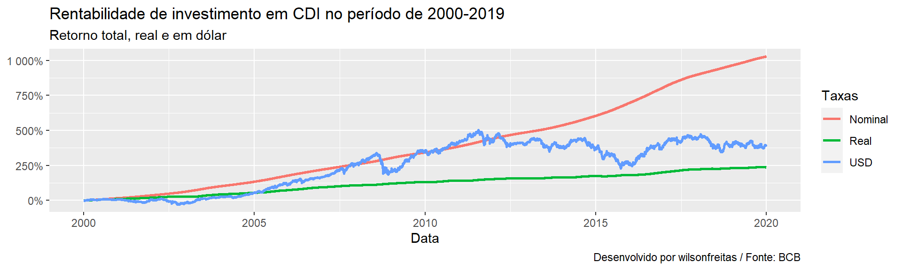
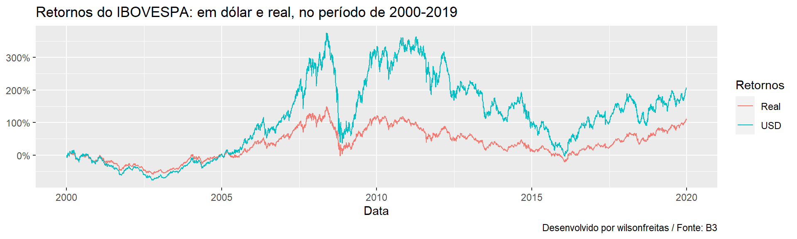
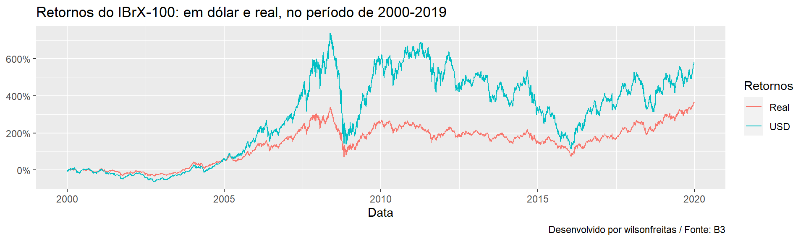
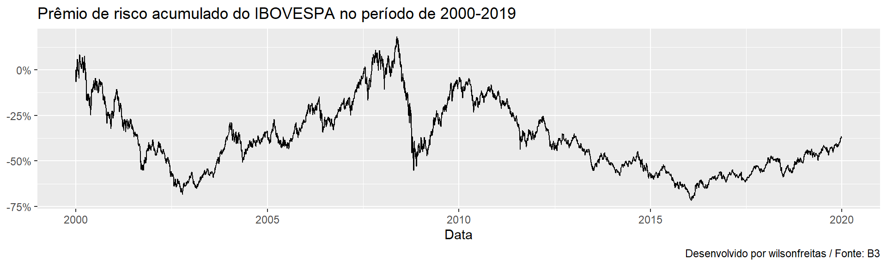
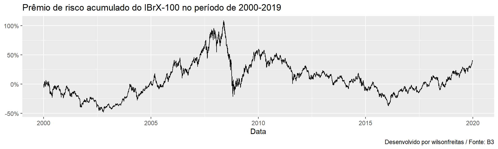

library(tidyverse)
library(rbcb)
library(rb3)Gosto de olhar com frequência o retorno real, retorno acima da inflação, para alguns tipos de investimento, e também o excesso de retorno, retorno acima da taxa de juros livre de risco. Gosto de fazer estas variáveis pois são métricas simples onde todo bom investimento deveria apresentar resultados positivos no longo prazo. Adicionalmente também gosto de olhar retornos em dólar pois acho uma boa proxy para avaliação de preservação de valor ou poder de compra.
Primeiramente importando os pacotes utilizados.
Vamos começar obtendo os dados da taxa livre de risco, a taxa DI, da taxa de variação da inflação (IPCA) e do dólar.
cdi <- get_series(c(CDI = 4389), start_date = as.Date("2000-01-01"))
ipca <- get_series(c(IPCA = 433), start_date = as.Date("2000-01-01"))
brlusd <- get_series(c(BRLUSD = 1), start_date = as.Date("2000-01-01"))Agora vou transformar a série de variação da inflação, que é uma série mensal, em uma série diária. Quero fazer a análise com dados diários, todas as variáveis da análise são divulgadas em dados diários. Para fazer este ajuste, vou calcular a taxa de inflação diária convertendo a taxa mensal em uma taxa diária, considerando um regime taxas de juros compostos.
rates <- left_join(
cdi |> mutate(month = format(date, "%Y-%m")),
ipca |> mutate(month = format(date, "%Y-%m")) |> select(month, IPCA),
by = "month"
)
ipca <- split(rates, rates$month) |>
map_dfr(function(df) {
dt <- nrow(df)
df["IPCA"] <- ((1 + df$IPCA[1] / 100) ^ (1 / dt) - 1) * 100
df
}) |>
select(-month, -CDI) |>
filter(!is.na(IPCA))Uma vez que temos:
- taxa de inflação diária;
- taxa DI diária (juros nominal);
- dólar diário (taxa de câmbio).
Vou calcular os retornos, real e em dólar. Antes faço a conversão das taxas de juros para taxas contínuas. Isso simplifica a manipulação das taxas de juros evitando o malabarismo nas contas.
rates <- cdi |>
left_join(ipca, join_by(date)) |>
left_join(brlusd, join_by(date)) |>
mutate(
log_cdi = log((1 + CDI / 100)^(1 / 252)),
log_ipca = log(1 + IPCA / 100),
log_price_brlusd = log(BRLUSD),
log_ret_brlusd = c(0, diff(log_price_brlusd)),
real_cdi = log_cdi - log_ipca,
usd_cdi = log_cdi - log_ret_brlusd,
) |>
filter(date >= as.Date("2000-01-01"), date < as.Date("2020-01-01"))A dolarização dos retornos diários em taxa DI são calculados da mesma forma que o retorno real, subtraindo o retorno do índice da taxa DI diária. Considerando que \(U_t\) é um montante em USD e \(N_t\) um montante equivalente em BRL convertido a uma taxa de câmbio \(c_t\) de reais por dólar (BRL/USD), tudo isso no instante \(t\). Assim, temos em \(t\)
\[ N_t^{\langle BRL \rangle} = U_t^{\langle USD \rangle} \cdot c_t^{\langle BRL/USD \rangle} \]
No instante \(T\) temos o montante \(N_{T}\) em BRL capitalizado pela taxa DI. Faz-se a conversão a taxa de câmbio \(c_T\) para se obter o montante em dólar \(U_T\). O retorno de \(U\) é dado por
\[ \log \frac{U_T}{U_t} = \log \frac{N_T}{N_t} - \log \frac{c_T}{c_t} \]
onde \(\log \frac{N_T}{N_t}\) é o retorno da taxa DI no período e \(\log \frac{c_T}{c_t}\) o retorno da taxa de câmbio no período, logo, o retorno em USD de um investimento em taxa DI. Isso é calculado aqui em base diária apenas para fins de comparação e como um exercício analítico, na prática, a conversão diária de um investimento em dólar não se aplica. Talvez para fins de acompanhamento faça algum sentido.
Abaixo temos o código que gera o gráfico de taxas de retorno acumulados.
rates |>
select(date, real_cdi, log_cdi, usd_cdi) |>
mutate(
Nominal = exp(cumsum(log_cdi)) - 1,
Real = exp(cumsum(real_cdi)) - 1,
USD = exp(cumsum(usd_cdi)) - 1,
) |>
tidyr::pivot_longer(c(Real, Nominal, USD), names_to = "Taxas") |>
ggplot(aes(x = date, y = value, colour = Taxas)) +
geom_line(linewidth = 1) +
scale_y_continuous(labels = scales::percent) +
labs(
x = "Data", y = NULL,
title = "Rentabilidade de investimento em CDI no período de 2000-2019",
subtitle = "Retorno total, real e em dólar",
caption = "Desenvolvido por wilsonfreitas / Fonte: BCB"
)
No gráfico vemos a insensatez que é falar em retorno total para longo prazo sem considerar a inflação. Pensando em poder de compra, temos que no período de 20 anos o investimento em taxa DI foi de 250%, preservando o poder de compra e sobrando um pouquinho pra aumento de gastos. De acordo com estes resultados, se a dua despesa aumentou em mais de 250% nestes 20 anos, você terá um problema de liquidez. A dolarização apresenta um resultado um pouco melhor, mostrando que tirar o dinheiro do Brasil é uma boa ideia para a preservação de poder de compra.
Seguindo com a análise, vamos um exercício equivalente para os índices de mercado: IBOVESPA e IBrX-100. Vamos obter os dados dos índices.
ibov <- index_get("IBOV", as.Date("2000-01-01"), do_cache = FALSE) |>
arrange(refdate)
ibxx <- index_get("IBXX", as.Date("2000-01-01"), do_cache = FALSE) |>
arrange(refdate)Os índices IBOVESPA e IBrX-100 possuem histórico anterior à 2000, contudo, como quero analisar o período de 20 anos entre 2000 e 2019, vou limitar o tamanho do histórico. Para os índices vamos calcular:
- prêmio de risco (excesso de retorno)
- retorno real
- retorno em dólar
- retorno total
A função abaixo, calc_rates, realiza todos estes cálculos e retorna um dataframe com os dados prontos para o gráfico.
calc_rets <- function(df) {
df |>
left_join(cdi, join_by(refdate == date)) |>
left_join(ipca, join_by(refdate == date)) |>
left_join(brlusd, join_by(refdate == date)) |>
mutate(
log_cdi = log((1 + CDI / 100)^(1 / 252)),
log_ipca = log(1 + IPCA / 100),
log_price = log(value),
total_return = c(0, diff(log_price)),
log_price_brlusd = log(BRLUSD),
log_ret_brlusd = c(0, diff(log_price_brlusd)),
excess_return = total_return - log_cdi,
usd_return = total_return - log_ret_brlusd,
real_return = total_return - log_ipca,
) |>
filter(refdate >= as.Date("2000-01-01"), refdate < as.Date("2020-01-01"))
}Segue também algumas funções que uso para a construção de gráficos
plot_returns <- function(df, index_name) {
period <- year(df$refdate) |>
range() |>
paste(collapse = "-")
df |>
mutate(
Real = exp(cumsum(real_return)) - 1,
USD = exp(cumsum(usd_return)) - 1,
) |>
select(refdate, Real, USD) |>
tidyr::pivot_longer(c(Real, USD), names_to = "Retornos") |>
ggplot(aes(x = refdate, y = value, colour = Retornos)) +
geom_line(linewidth = 0.5) +
scale_y_continuous(labels = scales::percent) +
labs(
x = "Data", y = NULL,
title = glue::glue(
"Retornos do {index_name}: em dólar e real, no período de {period}"
),
caption = "Desenvolvido por wilsonfreitas / Fonte: B3"
)
}
plot_excess_return <- function(df, index_name) {
period <- year(df$refdate) |>
range() |>
paste(collapse = "-")
df |>
ggplot(aes(x = refdate, y = exp(cumsum(excess_return)) - 1)) +
geom_line(linewidth = 0.5) +
scale_y_continuous(labels = scales::percent) +
labs(
x = "Data", y = NULL,
title = glue::glue(
"Prêmio de risco acumulado do {index_name} no período de {period}"
),
caption = "Desenvolvido por wilsonfreitas / Fonte: B3"
)
}Vamos começar com a análise de retornos: em dólar e real. Para isso vou apresentar um gráfico, para cada índice, onde temos o retorno real e o retorno em dólar. O objetivo dessa análise é verificar se os retornos acumulados no período são positivos. O que deve interessar a todo o investidor no longo prazo é retorno real significativo.
ibov_calc <- calc_rets(ibov)
plot_returns(ibov_calc, "IBOVESPA")
Vemos que o IBOVESPA apresenta um retorno real positivo de aproximadamente 100% no período de 20 anos. Em taxa anualizada isso é equivalente a 3.5% ao ano, algo equivalente a um título IPCA + 3.5%. Não é ruim, mas também não é uma maravilha.
Vamos para o IBrX-100.
ibxx_calc <- calc_rets(ibxx)
plot_returns(ibxx_calc, "IBrX-100")
O IBrX-100 apresenta um retorno real superior ao IBOVESPA no período de 20 anos. Com um retorno real de puco mais de 300% em 20 anos, o IBrX-100 entrega uma taxa anual de 7.2%. Bem melhor que o IBOVESPA, o que reflete as deficiências do IBOVESPA.
Agora vamos à análise de prêmio de risco (equity risk premium). Os gráficos a seguir mostram que o IBOVESPA não tem prêmio de risco positivo e que o IBrX-100 tem.


Uma análise complementar é valiar, para o período de análise, qual o percentual do período que os índices apresentam um prêmio de risco positivo. Isso ajuda a identificar se esse prêmio de risco positivo é um comportamento do índice ou se é apenas um efeito da janela analisada. Para realizar isso pego o retorno acumulado e conto a quantidade de dias positivos e divido pelo total de dias.
c(
IBOVESPA = sum((exp(cumsum(ibov_calc$excess_return)) - 1) > 0) / nrow(ibov_calc),
`IBrX-100` = sum((exp(cumsum(ibxx_calc$excess_return)) - 1) > 0) / nrow(ibxx_calc)
) IBOVESPA IBrX-100
0.04283694 0.55910285 Como podemos observar a diferença é brutal. Parece que o IBOVESPA foi criado para ficar abaixo do CDI. No período de 20 anos, em apenas 4% dos dias, o IBOVESPA apresentou um prêmio de risco positivo. Entretanto, o IBrX-100 apresentou prêmio de risco maior que zero em 55% dos dias no período de 20 anos.
Em termos práticos, para fins de alocação, o ETF PIBB11 segue o índice IBrX-100 e possui bastante liquidez. Este ETF é uma ótima opção na composição das carteiras para representar um índice de mercado.